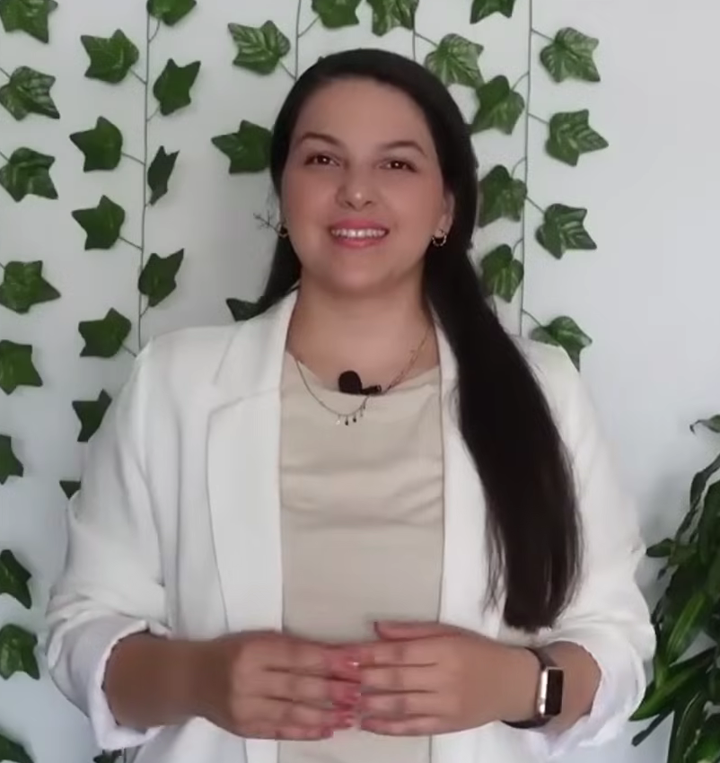
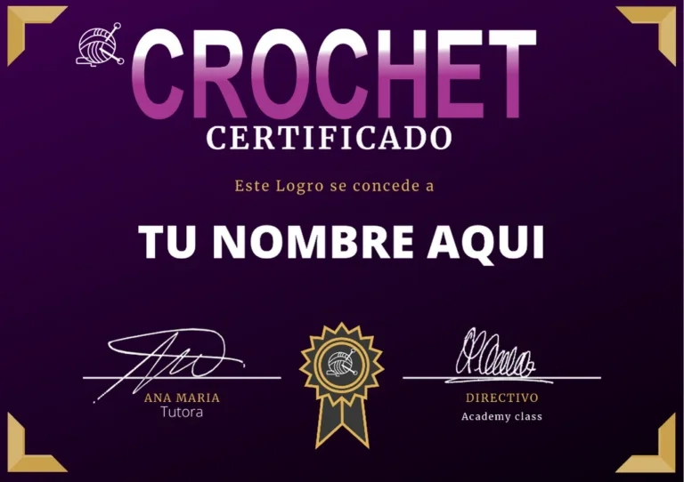

Lo gratis te está saliendo caro. Y no es por el hilo.
Mira, aprendiste puntos sueltos, no el orden que los conecta. Por eso pasas horas con el gancho en la mano y el hilo enredado entre los dedos, y avanzas poco. Y no es que te falte don.
No hace falta experiencia previa. El curso arranca desde cero. Empieza literal por cómo sostener la aguja.
¿Sabías esto? En un solo video de YouTube para principiantes de crochet conté más de 100 comentarios de mujeres escribiendo la misma frase cada una a su manera: "a mí no me sale." Cien mujeres. Un solo video. Apostaría a que tú también la pensaste alguna vez. El gancho a mitad de vuelta. La misma fila torcida por tercera vez. No es que te falte el pulso. Es que nadie te enseñó en el orden correcto. Y hay una razón bien concreta.
Aquí está el problema, así de simple
Te cuento cómo empezó, porque seguro te suena. Aprendiste con lo que encontraste gratis y suelto en internet. Un video de gorros acá. Uno de bufandas allá. Nadie te avisó si tu punto estaba bien o mal. Te dabas cuenta recién con diez filas torcidas y el hilo enredado entre los dedos. Y ya estás harta de eso.
¿Y sabes en qué termina eso? En la bolsa con proyectos a medias en el fondo del armario. En el gancho frío sobre la mesa. Ves a otra mujer vender lo que teje, y algo se te aprieta en el pecho. ¿Por qué ella sí y tú todavía no?
Antes de que pienses "esto lo consigo gratis"
Ya lo probaste. Por eso sigues aquí. ¿Pagaste alguna vez por algo "barato" que resultó ser lo mismo que lo gratis? El problema no fuiste tú. Fue que compraste videos sueltos disfrazados de curso, no un programa real.
Y escúchame esto, porque es mecánica simple: no controlas la tensión del hilo si no dominaste el punto bajo. No armas un tejido circular sin el anillo mágico. No lees un patrón si no sabes las abreviaturas. Cada técnica sostiene a la siguiente. Por eso el orden es el 80% del resultado.
Pero resulta que sí hay una salida
Imagina tener en las manos una prenda terminada, de verdad, y que alguien te la compre. Confía: no es una fantasía, es lo que ya les pasó a alumnas reales de este curso.
Se llama Crochet Premium. Te lo enseña Ana María: crochetera profesional hace más de 10 años. No alguien que aprendió la semana pasada para grabar un curso. En sus propias palabras: "te voy a enseñar todos mis secretos que utilizo a la hora de realizar hermosas prendas de manera simplificada y en muy poco tiempo."
Y te lo digo derecho, sin venderte humo: esto no es magia. Vas a tejer feo las primeras veces. Vas a maldecir el hilo más de una vez. Así empezó cualquiera. Así empezó ella.

Aprendes
Desde sostener la aguja hasta las técnicas profesionales, en el orden correcto.
Creas
Tus propios diseños, con tu propia marca y tu propio sello.
Vendes
Con las técnicas de redes sociales que trae el curso, para empezar a ganar dinero con lo que haces.
Lo que vas a poder hacer
Esto no es "aprendé crochet" genérico. Es esto, exactamente:
Cómo armar el anillo mágico que separa una prenda amateur de una que parece comprada en tienda.
La diferencia real entre tejido plano y tejido circular tubular. Confundir los dos es la razón por la que la mitad de tus prendas no cierran bien.
Cómo leer un patrón y un diagrama sin tener que adivinar ni frenar cada dos minutos a buscar un tutorial distinto.
El punto exacto donde la mayoría abandona un proyecto: aumentos y disminuciones. Y cómo resolverlo antes de que te pase a ti.
Cómo armar tu propio muestrario de puntos básicos antes de arriesgar tu primer proyecto real, para no gastar hilo en algo que no vas a terminar.
El módulo que casi ningún tutorial gratis tiene: cómo ponerle tu propio nombre y tu propio sello a lo que haces.
Cómo mostrar y vender lo que tejes en redes sociales sin sonar a vendedora desesperada (Bono #2).
Quién te lo enseña
¿Quién te dice todo esto? No una empresa. Una persona.

"Hola, mi nombre es Ana María y soy crochetera profesional hace
más de 10 años. En este curso te voy a enseñar todos mis secretos
que utilizo a la hora de realizar hermosas prendas de manera
simplificada y en muy poco tiempo."
Ana María, instructora de Crochet Premium
De un solo video de crochet para principiantes conté más de 150 personas diciendo que recién empiezan. Y más de 100 describiendo que algo "no les sale" o "no entienden". No eres la excepción. Eres la mayoría.
Lo que dicen las alumnas reales

Milka Pereyra · Montevideo

Vanely Rodriguez

Maria Esther Fernandez

Margarita Alcaraz

Maria Esther Fernandez
El programa completo
Conociendo los materiales
Agujas e hilado, herramientas de trabajo, nudo corredizo y cadeneta.
Primeras prácticas
Punto bajo, medio punto alto, punto alto y punto alto doble, aumentos y disminuciones.
Técnicas para dar forma a los tejidos
Anillo mágico, lectura de patrones y diagramas, tejido circular tubular y cambio de color.
Proyectos
Toma de medidas, armado de patrones y estructuras de diseño, creación de tu propia marca personal.
Módulos extra
Puntos fantasía, granny square con flores 3D, tejidos realizados con totora.
Todo lo que te llevas
- check_circleAcceso de por vida al curso completo en video HD y todas sus actualizaciones futuras
- check_circleAcceso a una comunidad exclusiva de crocheteras que están en lo mismo que tú
- check_circleAcompañamiento del tutor y sistema de preguntas y respuestas tipo foro
Por menos de lo que gastas en dos salidas al supermercado. No por lujo: por dejar de gastar hilo y tiempo en intentos que no llegan a nada.
Y eso no es todo: 5 bonos sin costo extra

Super kit para emprendedoras
Patrones, planificador y agenda crochetera, todo descargable.

Crece en las redes sociales
Powerclass para crear tu marca personal y vender tus creaciones paso a paso.

Navidad para todos
Clases adicionales de accesorios navideños + 8 patrones extra.

Lista de proveedores
Para conseguir materiales fácil, sin importar tu país. Nadie te deja sola buscando dónde comprar.

Certificado
Certificado de participación al terminar el programa.
Sumale los 5 bonos de arriba ($47 + $67 + $37 + $27 + $22): $200 en valor real, incluidos en tu pago único de $39,99. No los pagas aparte.
Más de 100 mujeres escribieron "a mí no me sale" en un solo video de YouTube. No eres la única con este problema.
Maria Esther Fernandez, alumna real, ya tiene sus granny squares armados.
Mira el video de arriba: Ana María te muestra la técnica completa, no un resumen.
Cada tutorial gratis que sigas viendo es tiempo que no te acerca a vender nada.
Garantía de 7 días, sin líos y sin preguntas incómodas. Si sientes que no era para ti, te devuelven el 100% de tu dinero. El 100%, no una parte.
Lo que seguro estás pensando
La mayoría de las que lean esto no va a hacer clic. Lo sé. Y me juego algo: sé exactamente por qué. Así que antes de que cierres esta página, contesto lo que ya estás pensando:
¿Para qué pago si hay tutoriales gratis en YouTube? add
Porque ya los viste y sigues aquí leyendo. Lo gratis no tiene orden, y nunca sabes si tu técnica es correcta. Este curso sí, de punta a punta. Y si aun así no es para ti, tienes la garantía de 7 días.
Ya pagué un curso antes y terminó siendo lo mismo que lo gratis. add
Le pasó a mucha gente. La diferencia acá es la estructura completa (materiales → puntos → forma → marca → venta) y el acompañamiento del tutor, no un montón de videos sueltos con nombre de curso. Y esta vez, si no te sirve, te devuelven la plata.
No tengo plata para darme ese lujo ahora. add
Por eso el valor real del programa ($100) baja a un único pago de $39,99. Y por eso tienes 7 días de garantía completa. Si no era para ti te devuelven todo.
Nunca tejí nada en mi vida, no sé si voy a poder. add
El curso arranca literal desde cómo sostener la aguja y el hilo. No es para quien ya sabe. Es para quien no sabe nada todavía. Y tienes 7 días para comprobarlo sin perder nada.
No tengo tarjeta para pagar por internet. add
Hay opción de pago en efectivo según tu país (PagoEfectivo, OXXO, Baloto, Sencillito). O le puedes pedir a alguien de confianza que haga la compra por ti.
No voy a tener tiempo de seguirlo con horario fijo. add
No hay horario. Los videos son tuyos para siempre y avanzas a tu ritmo.